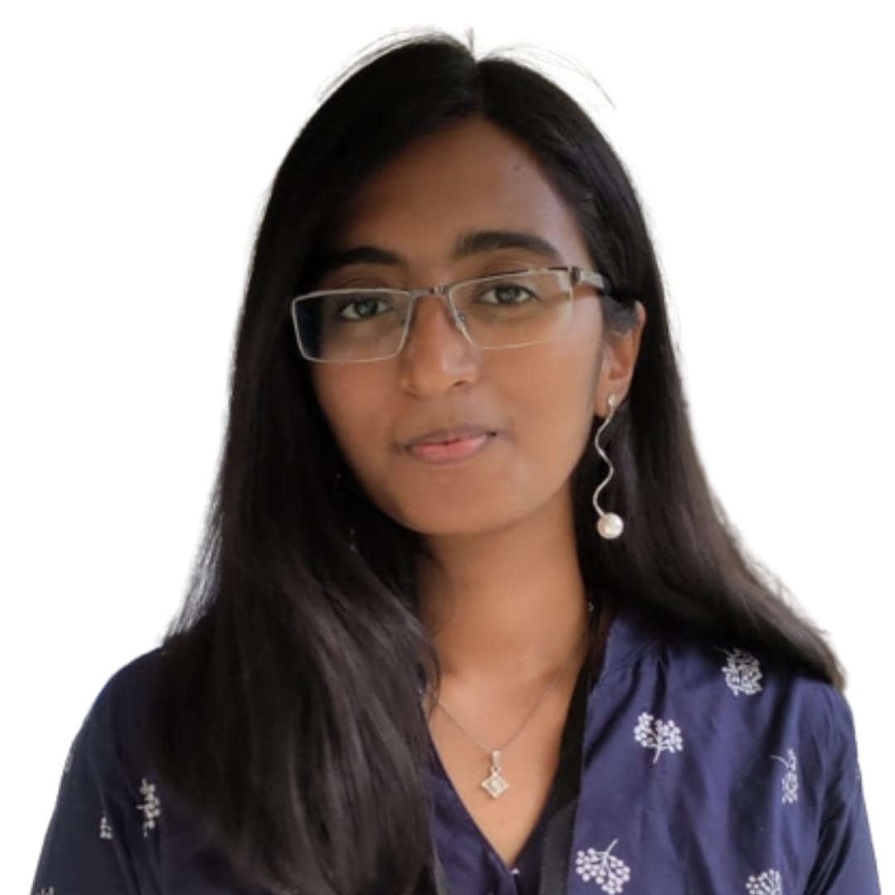

ANKITA ELIZABETH AJAY

Summary:
Motivated final year CSE student seeking opportunities to learn, grow, and excel in the tech industry as a budding programmer and developer.
Education
Maulana Azad National Institute of Technology, Bhopal
Bachelor of Computer Science and Engineering
Dec 2020 - May 2024(Expected)
Indian Central School, Kuwait
CBSE Board, Higher Secondary
March 2006 - March 2020
Projects
Positions of Responsibility
Literary Head
Intellect Browsers' Consortium
July 2021 - Present
- Works as a literary Head, assigning and evaluating content amongst other executive work.
- Conducts annual events such as Azure-a national-level writing competition, Model United Nations, Crescita, Oblivion.
- Provides content for the website and socials of IBC.
Head Girl
Indian Central School
March 2019 - March 2020
- Incharge of Discipline
- Student Council
Technical Skills and Interests
- Programming Languages
C/C++ Python MySQL
- Coursework
Data Structures Operating Systems Machine Learning Artificial Intelligence
Computer networks Algorithms HTML
Other